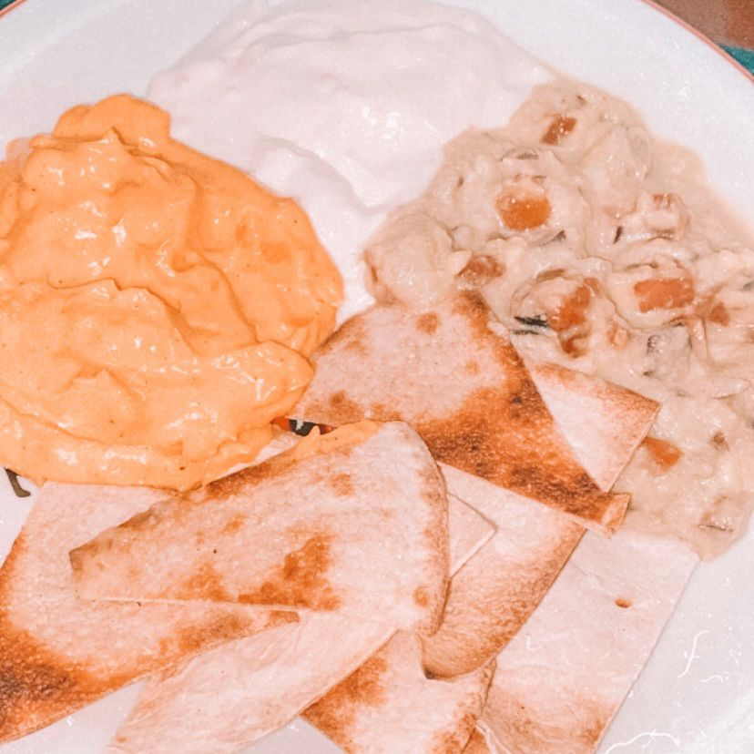
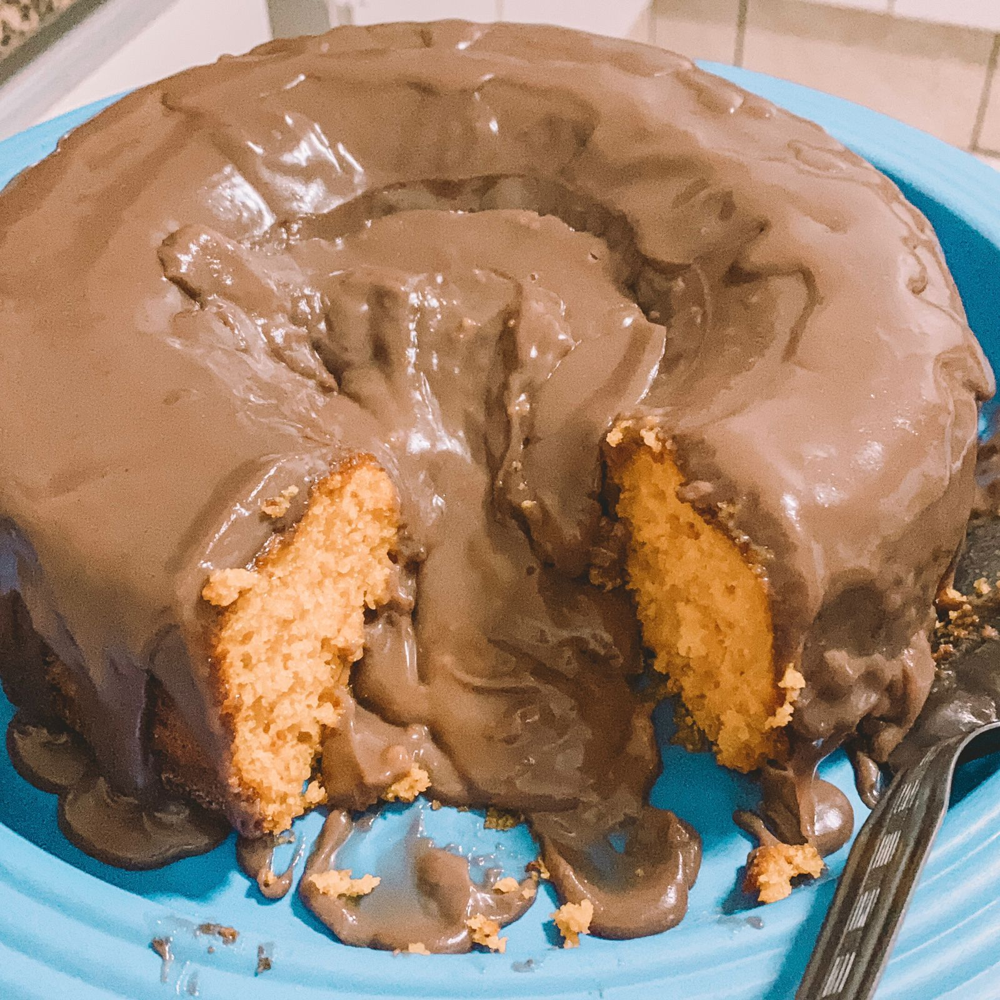
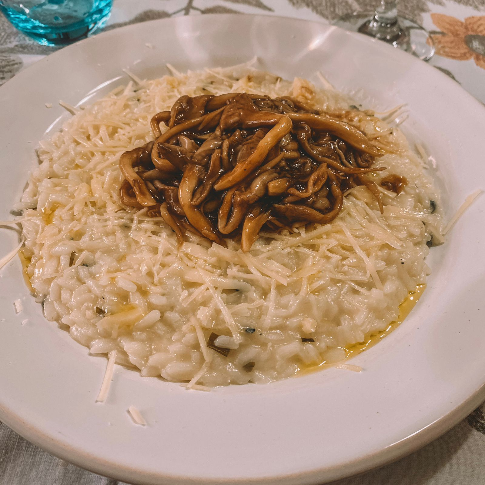

Cozinhar
Quando tenho tempo livre, eu gosto de cozinhar, receitas que já desenvolvi e receitas novas, para mim e para outras pessoas. Amo me aventurar na cozinha e descobrir novos sabores, amo conhecer novos temperos e novas técnicas.
Sou pseudovegetariana e só consumo peixe porque sou rendida por japa. Sou amante dos doces e não dispenso chocolate. Sou apaixonada por massas e não resisto a um risoto, o que é uma das minhas especialidades na cozinha.
← Voltar ao portfólio